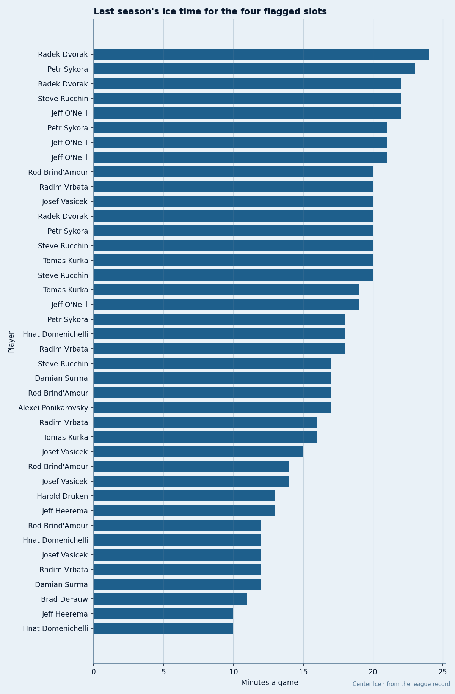
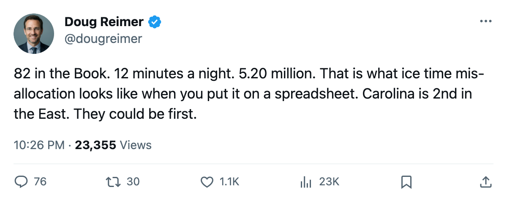
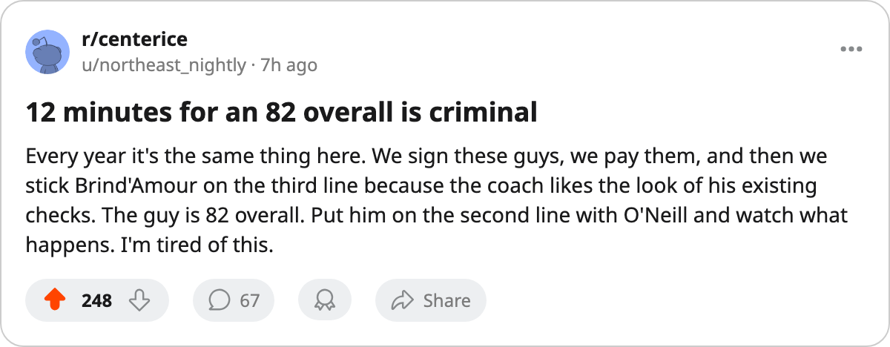

$9.40M, 9.8 Minutes, 3rd and 4th Line: The Carolina Mis-Slot Board
Four forwards rated 74 through 82 carry $9.40M and play an average of 9.8 minutes a night for the 2nd-best team in the East
 Doug ReimerAnalytics editor, ex-video coach · The Slot Report
Doug ReimerAnalytics editor, ex-video coach · The Slot Report
Carolina has 4 mis-slotted forwards. The desk's method flags a man when his Book grade exceeds a player at his position who skates higher in the lineup. At  Carolina Hurricanes that test produces 4 hits, 2 of them above 80 overall, and the combined salary of those 4 men is $9.40M, or 14.7% of a $63.79M payroll.
Carolina Hurricanes that test produces 4 hits, 2 of them above 80 overall, and the combined salary of those 4 men is $9.40M, or 14.7% of a $63.79M payroll.
The Hurricanes sit 2nd in the East at 7 points from 5 games. Their pace (1.40 points a game) projects to 114.8 points over 82. The record holds. The question is what it looks like if the ice were allocated to match the ratings.
The 4 hits
| Player | Pos | Overall | Salary | GP | Pts | MPG | Slot | Rated Above |
|---|---|---|---|---|---|---|---|---|
 Rod Brind'Amour78 Rod Brind'Amour78 | C | 82 | $5.20M | 5 | 1 | 12.0 | L3C |  Steve Rucchin74, 78 (L2C, 20.0 mpg) Steve Rucchin74, 78 (L2C, 20.0 mpg) |
 Radek Dvorak75 Radek Dvorak75 | RW | 80 | $3.20M | 4 | 2 | 7.0 | L4LW |  Jaroslav Svoboda66, 68 (L1LD) Jaroslav Svoboda66, 68 (L1LD) |
 Radim Vrbata73 Radim Vrbata73 | RW | 78 | $0.40M | 5 | 1 | 12.0 | L3RW | Jaroslav Svoboda, 68 (L1LD) |
 Jeff Heerema70 Jeff Heerema70 | RW | 74 | $0.60M | 5 | 3 | 8.0 | L4RW | Jaroslav Svoboda, 68 (L1LD) |
Those 4 men have 7 combined points at 9.8 minutes a night. Dvorak has played 4 of 5 games. He carries an injury spell this season, body part not named by the league.
The Brind'Amour comparison
Brind'Amour grades 82 in the Book. Rucchin grades 78. Rucchin plays second-line center and 20.0 minutes a night. Brind'Amour plays third and gets 12.0. The gap is 4 grades of overall, 8.0 minutes of ice, and $2.20M of salary.
Brind'Amour appears on Carolina's injury ledger with an unnamed spell, but he has skated in all 5 games. He finished the sample with 1 point. Rucchin has 3 points in 3 more minutes a night. The coaching staff has Rucchin ahead in the pecking order and has used the 4-grade gap in the Book to justify it.
 Jeff O'Neill82 is the only Carolina Hurricanes player in the league's top 30 scorers. He has 6 points in 5 games at 21.2 minutes a night, grades 86, and carries $6.92M on an expiring deal. The mis-slot sits one rung below him.
Jeff O'Neill82 is the only Carolina Hurricanes player in the league's top 30 scorers. He has 6 points in 5 games at 21.2 minutes a night, grades 86, and carries $6.92M on an expiring deal. The mis-slot sits one rung below him.

The injury overlay
Carolina has 5 injury spells and 34 days lost, the 4th-highest total in the league behind  Philadelphia Flyers (6 spells, 97 days),
Philadelphia Flyers (6 spells, 97 days),  Atlanta Thrashers (5, 71) and
Atlanta Thrashers (5, 71) and  Florida Panthers (6, 34). Two of the five spells belong to mis-slotted players: Brind'Amour and Dvorak. The other three hit
Florida Panthers (6, 34). Two of the five spells belong to mis-slotted players: Brind'Amour and Dvorak. The other three hit  Sandis Ozolinsh83 (a hand), Sean Hill (unnamed), and Harold Druken (an abdomen).
Sandis Ozolinsh83 (a hand), Sean Hill (unnamed), and Harold Druken (an abdomen).
The slot assignments show the coaching staff had planned to use these men on the bottom two lines before health complications arrived. The injury spell on Dvorak may explain why he has played 4 of 5 games and logged only 7.0 minutes a night. The spell on Brind'Amour resolved inside the schedule, and he still sits third center.
What the pace number hides
A 1.40 pace projecting to 114.8 points is good. But 7 points from 4 men costing 14.7% of the payroll is a drag that the 1.40 already swallows. If those 4 men produced at the rate the coaching staff extracts from its top two pairs, the pace number would be higher. The desk cannot calculate what that rate is without a longer sample, but the 9.8 minutes a night is not a sample problem.
The club's average morale sits at 90.8, 4th-lowest in the league.  Brad Richards87 is at 78, and Vaclav Spacek81 at 76. The test does not flag them. They play 11.8 and 5.8 minutes and know they can play more. Carolina has a different version of the same problem: men rated 74 through 82 who know they can play more minutes than 8 and 12.
Brad Richards87 is at 78, and Vaclav Spacek81 at 76. The test does not flag them. They play 11.8 and 5.8 minutes and know they can play more. Carolina has a different version of the same problem: men rated 74 through 82 who know they can play more minutes than 8 and 12.
2nd place in the East and $9.40M sitting at 9.8 minutes a night both fit in the same 5-game window.

